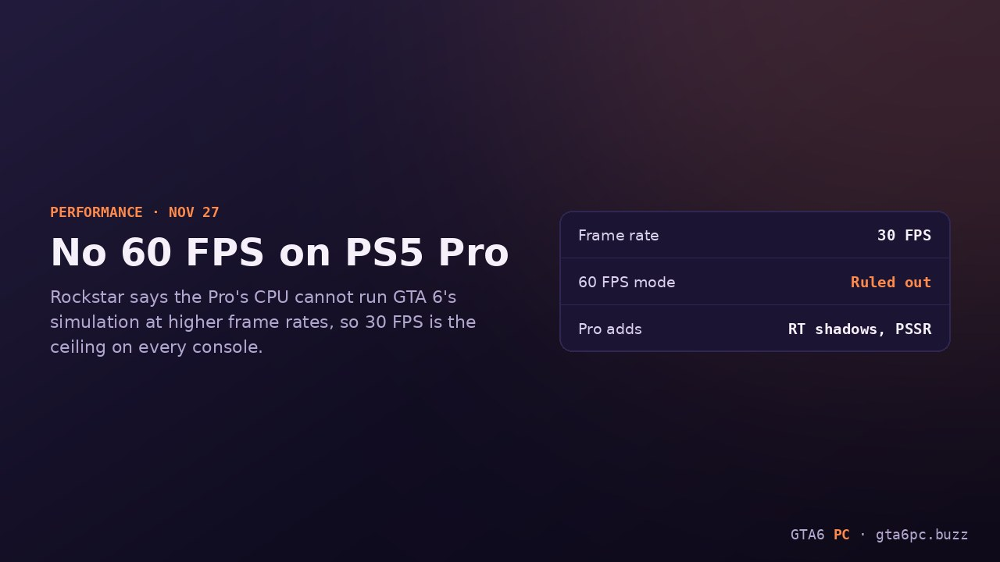

GTA 6 PS5 Pro 60 FPS ruled out: Rockstar explains why the CPU is the limit
The most powerful PlayStation cannot run GTA 6 at 60 frames per second, and Rockstar says that will not change. In a statement to Kotaku, technology production director Marc Chambers explained that the PS5 Pro's processor is only slightly faster than the base console's, and it is not powerful enough to run the game's complex simulation at higher frame rates. There is no performance mode on any console, and Rockstar has ruled out adding one later.

What Rockstar said
Rockstar's technology production director Marc Chambers gave the explanation in a statement to Kotaku, which had asked whether a 60 FPS or 40 FPS option could arrive after launch. Video Games Chronicle reports that Chambers ruled out both, and Push Square confirms the same answer: there will be no higher frame rate mode on any launch console, including the PS5 Pro.
Chambers described the base console presentation first. "Our base presentation makes use of ray-traced reflections and global illumination," he told Kotaku. "On the PS5 Pro, this is enhanced with the addition of ray-traced shadows, as well as overall added clarity through the use of PlayStation Spectral Super Resolution (PSSR). The PS5 Pro features an upgraded graphics processor and upscaling technology that we leverage to increase the game's visual fidelity."
Then came the limit. "While the PS5 Pro's central processor is slightly better than the PS5 base console, it is not powerful enough to run the game's complex simulation at higher frame rates," Chambers said. That is the whole answer in one sentence: the Pro's extra power goes into the image, not into the frame rate.
Why the CPU is the bottleneck
Most console games that offer a performance mode trade visual quality for frame rate, usually by lowering resolution or turning off ray tracing. GTA 6 is different, because its heaviest work is not drawing the picture. It is simulating Leonida: dense traffic, crowds, physics, weather and the background systems that keep the world alive whether the player is looking at them or not.
Chambers put a number on that work in the same Kotaku interview. "GTA 6 pushes the current-generation console hardware to its absolute limits," he said. "The complexity of simulating and rendering the environments and inhabitants in a world the scale of Leonida, while maintaining the density, visual fidelity, and player agency we envisaged, places extraordinary demands on the hardware. Bringing all of these systems together and completing the required work for every frame is only just possible within a ~33ms frame budget."
A 33 millisecond budget is the time available for one frame at 30 FPS. Doubling the frame rate would mean doing the same simulation work in about 16.7 milliseconds, and the CPU simply cannot get there. Rockstar vice president of technology David Hynd told Push Square the team removed one full frame of input delay compared with past titles, sampling the controller as late as possible during the game update, which is why the game feels responsive even at 30 FPS. Digital Foundry's analysis, as reported by VGTimes, found the PS5 Pro holds a near-constant 30 FPS with perfect frame pacing, while the base PS5 mostly holds 30 but dips into the mid-20s in long explosive sequences. Our 30 FPS on consoles guide covers the frame rate picture across all four consoles.
The Xbox 60 FPS glitch claim
Since launch, clips have circulated claiming a Quick Resume trick on Xbox unlocks 60 FPS or more. The claim is unconfirmed. No outlet has verified it with controlled testing, and it sits in the same category as the other unproven claims tracked on live update pages: interesting footage, no proof. Rockstar has said the game targets 30 FPS on every console, and the developers told Wccftech it became clear at an early stage of development that 30 FPS was the target for this console generation.
There is a simple test for any 60 FPS claim. A real frame rate change would show up in frame time measurements from Digital Foundry or a similar outlet, with the game's simulation running twice as fast. Until that testing exists, the Quick Resume clips are a rumour, not a mode. Do not buy a console, a capture card or a subscription on the strength of them.
What this means for PC players
For PC players, the PS5 Pro answer is actually useful news. It confirms that the frame rate ceiling on consoles is a hardware ceiling, not a setting Rockstar chose to withhold. A PC release would run on hardware far beyond any current console: desktop CPUs with many more cores and much higher clock speeds, and graphics cards that dwarf the Pro's GPU. That is why KitGuru concludes that players hoping for 60 FPS will likely need to wait for future hardware or the eventual PC release.
Rockstar has still announced no PC version, and the GamesBeat report pointing to the first quarter of 2027 remains a rumour. When a PC version does arrive, expect it to be the first official way to play GTA 6 above 30 FPS, with the usual PC options for resolution, frame rate and upscaling. Our ray tracing on PC guide explains what the PC version could offer visually, and our PC versus console comparison sets out the full gap between the platforms.
Quick answers
Will GTA 6 get a 60 FPS mode on PS5 Pro?
No. Rockstar told Kotaku there will be no 60 FPS mode on PS5 Pro, and no 40 FPS option either. Technology production director Marc Chambers said the Pro's CPU is not powerful enough to run the game's complex simulation at higher frame rates.
Why can't the PS5 Pro run GTA 6 at 60 FPS?
The limit is the CPU, not the graphics chip. The Pro has a much faster GPU and upscaling hardware, but its processor is only slightly faster than the base PS5. Rockstar says the open-world simulation fills a roughly 33 millisecond frame budget at 30 FPS, leaving no room to double the frame rate.
What does the PS5 Pro version of GTA 6 add?
The Pro adds ray-traced shadows on top of the ray-traced reflections and global illumination in the base presentation, plus extra clarity through PlayStation Spectral Super Resolution (PSSR). The frame rate stays at 30 FPS, but Digital Foundry found the Pro holds it with near-perfect frame pacing.
Is there a 60 FPS glitch on Xbox?
Clips claim a Quick Resume trick on Xbox unlocks 60 FPS or more, but the claim is unconfirmed. No outlet has verified it with testing, and Rockstar has said the game targets 30 FPS on every console. Treat the clips as a rumour until independent testing confirms them.
Will the PC version of GTA 6 run at 60 FPS?
Rockstar has announced no PC version, so there is no official answer. On PC, far faster CPUs and graphics cards exist than in any current console, so a future PC release is the realistic route to higher frame rates. The rumoured early 2027 window from GamesBeat remains unconfirmed.
Last updated . We update this page when Rockstar announces anything new.